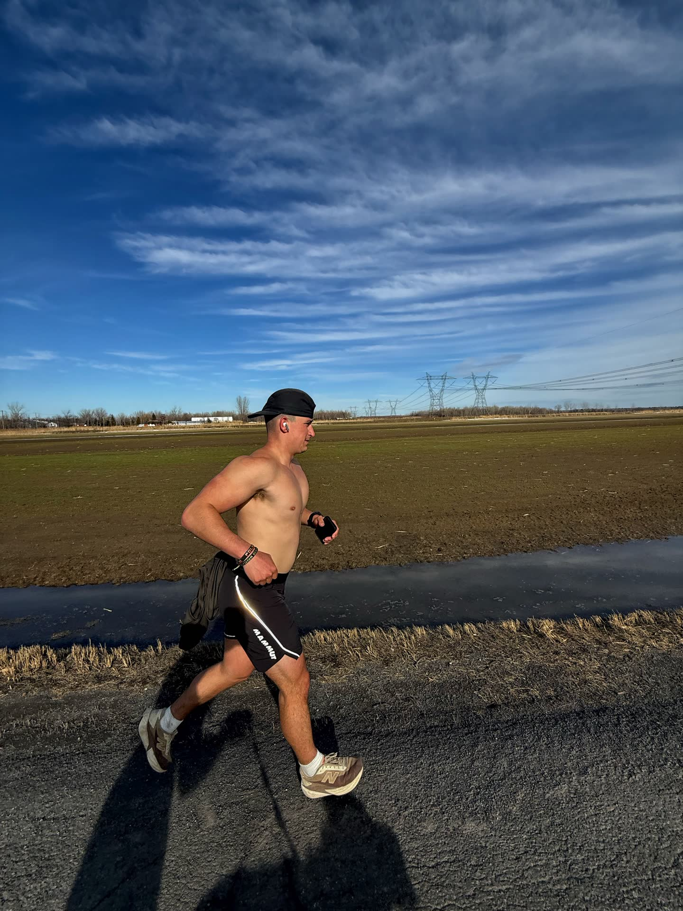
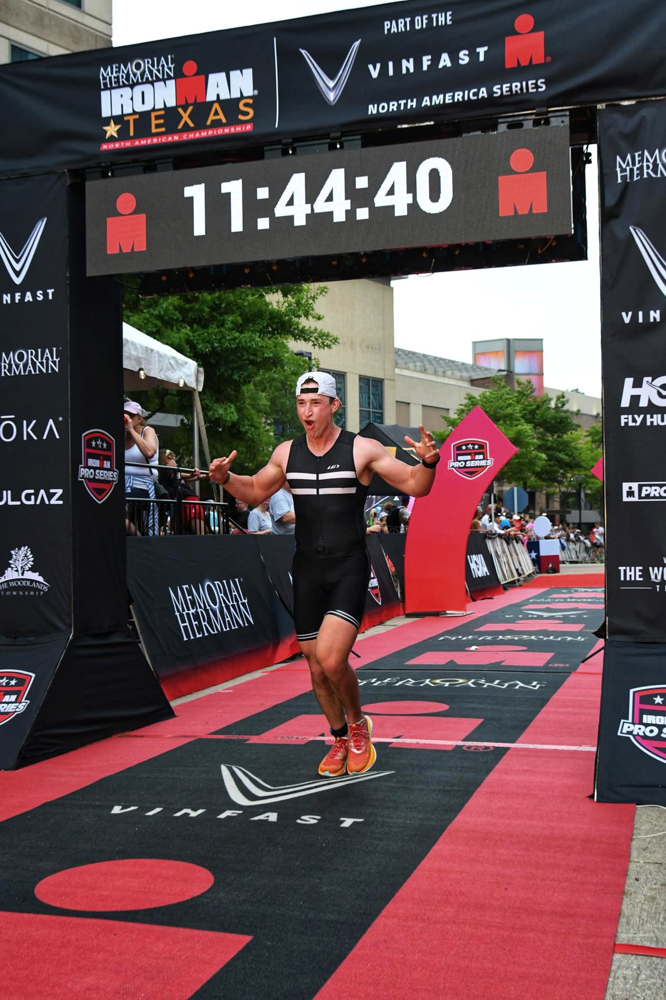
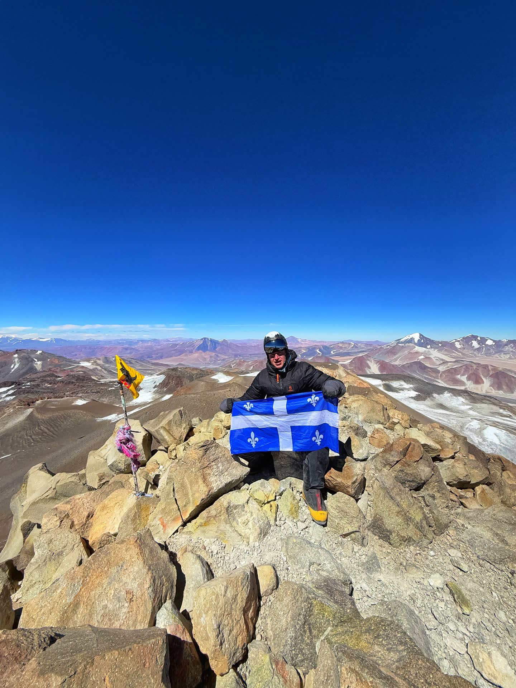
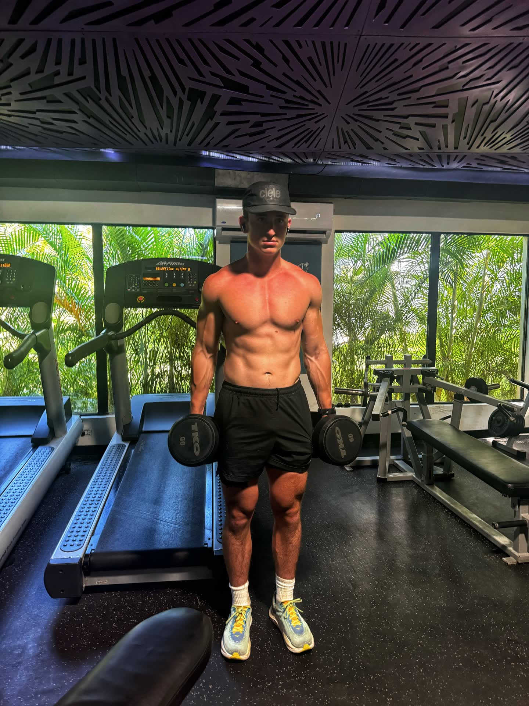
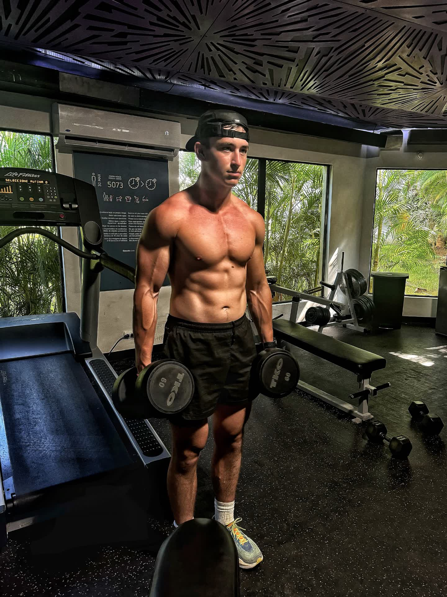
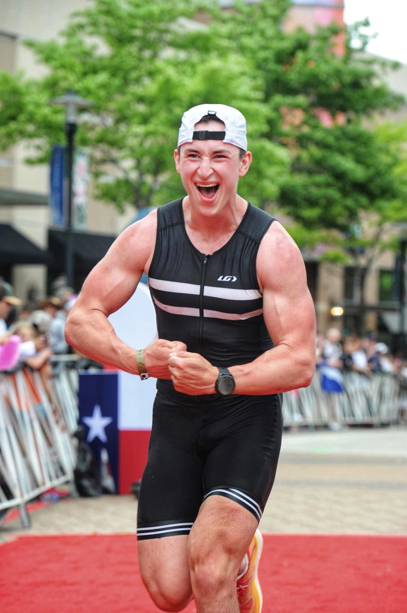
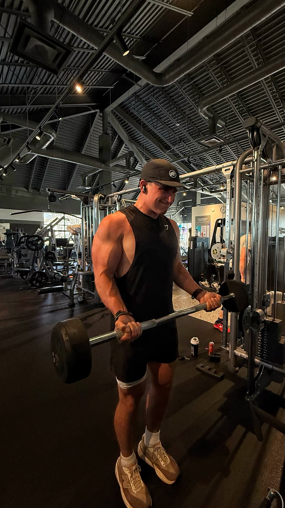
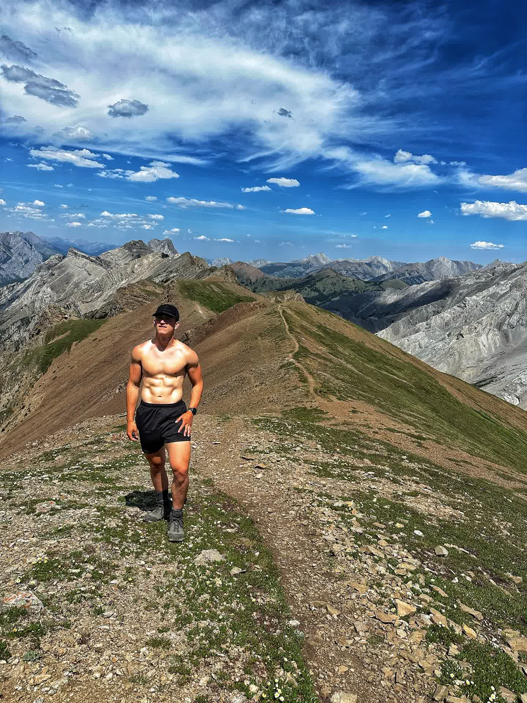

ENDURE Run
La course à pied, pour courir plus vite et plus longtemps.
Ton plan d’entraînement, construit chaque semaine à partir de tes vraies données.
Choisir mon planLa même méthode pour la force, l’endurance et la montagne.
Xavier Ladouceur a commencé avec 40 lb à perdre. Avec la Hybrid Method, il a terminé un Ironman, gravi trois fois le Kilimandjaro et, à 23 ans, il est devenu le plus jeune Québécois au sommet de l’Everest.



Posté directement dans ton calendrier intervals.icu.
Il tient compte de ce que tu as vraiment fait : charges notées, RPE et commentaires.
Tes séances se synchronisent avec ta montre, prêtes à lancer.
Des notes nutrition pour chaque jour de la semaine.
Choisis la formule qui te convient.
Il porte sur ton objectif : course, force, physique ou montagne.
Ton plan arrive là où tu t’entraînes déjà.
La semaine suivante s’adapte à ce que tu as fait.
Ton plan monte par blocs de quatre semaines. La quatrième est plus légère, pour que ton corps absorbe le travail.
Choisis celui qui te ressemble. Tu pourras en changer plus tard depuis ton questionnaire.

La course à pied, pour courir plus vite et plus longtemps.

Prendre du muscle et dessiner ta silhouette.
Te préparer pour la montagne et l’altitude.

La force et l’endurance dans la même semaine.

Devenir plus fort sur les grands mouvements.

L’endurance pour perdre du gras en gardant ton muscle.
Le même plan complet dans les trois formules. Seule la durée change.
Facturé chaque mois
99 $ facturés tous les 3 mois
299 $ facturés une fois par année
Tu veux la méthode Hybrid Method sans le prix d’un coaching. Ton plan se construit chaque semaine à partir de ce que tu notes.
Il n’y a ni appel ni suivi par un coach, et personne ne répond aux messages. Tes commentaires servent à construire la semaine suivante.
Tu préfères un suivi individuel ?Le coaching Hybrid Method t’offre un coach qui te suit d’une semaine à l’autre.
Voir le coachingToute montre qui se synchronise avec intervals.icu : Garmin, Coros, Suunto, Polar, Wahoo, et l’Apple Watch par une application.
Oui, depuis le lien de ton questionnaire.
Note-le dans ton questionnaire ou dans le commentaire d’une séance, et la semaine suivante s’adapte. Pour toute blessure, consulte un professionnel de la santé.
Oui, en tout temps, depuis ton compte Whop.
La page et le questionnaire existent en français et en anglais. Change de langue avec le bouton en haut de la page.